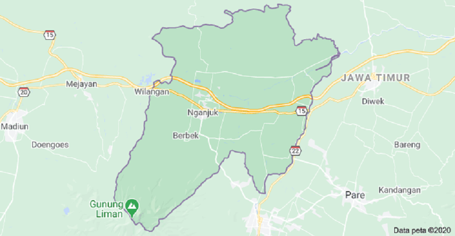
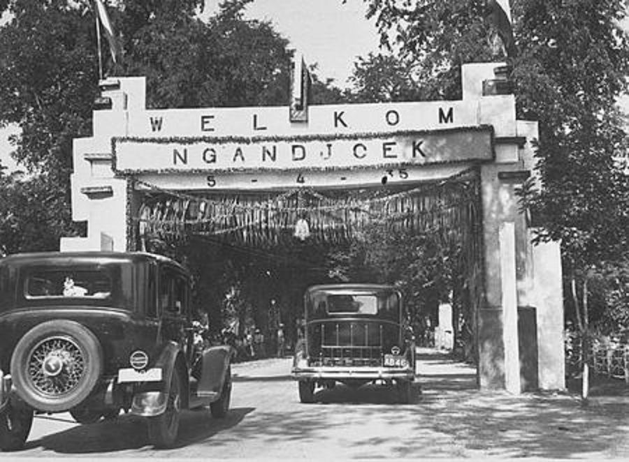

Nganjuk Regency is a district in East Java Province. This district is bordered by Bojonegoro Regency in the north, Jombang Regency in the east, Kediri Regency and Ponorogo Regency in the south, and Madiun Regency in the west. In the era of the Medang Kingdom, Nganjuk was known as Anjuk Ladang, namely the Land of Victory. Nganjuk is also known as the City of Winds. Nganjuk Regency is located between 111o5 'to 112o13' East Longitude and 7o20 'to 7o59' South Latitude.
Nganjuk was formed called Anjuk Ladang which in Old Javanese means the Land of Victory. Built in 859 Caka or 937 Masehi Year. Based on a map of Central Java and east Java on 1811 M, Nganjuk divided into 4 region Berbek, Godean,Nganjuk, and Kestosonowas controlled by the Dutch and the Yogyakarta sultanate.
In Statsblad van Nederlansch Indie Number 107 on June 4 1885 Governor-General from Indie Nedherland about capital city limit of Toeloeng Ahoeng, Trenggalek, Ngandjoek and Kertosono. That mentioned “III tot hoafdplaats Ngandjoek, afdeling Berbek, de navalgende Wijken en kampongs”. Within fixed Nganjuk city consist of village and villages becomes a Capital City of Nganjuk.